A probability space is a measure space  with . Elements of
with . Elements of  are outcomes,
measurable sets are events, and
are outcomes,
measurable sets are events, and
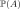
is the probability of .
.
For events
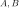
: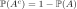
;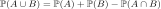
; and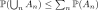
for any sequence of events. If or
or  , then
, then
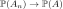
.Additivity on the disjoint pair
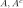
with total mass gives
the first. For the second,
gives
the first. For the second, 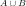
is the disjoint union of , and
and 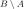
, and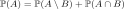
; substituting gives the identity. Subadditivity and continuity from below are properties of any measure; continuity from above needs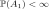
, which here is automatic.For events with
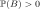
, the conditional probability of given  is
is
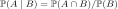
.
For fixed with , the map
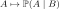
is a probability measure on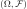
, concentrated on.
It is non-negative, assigns
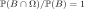
to, and is countably additive because
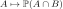
is, division by the constant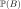
preserving the sums. It assigns to any event disjoint
from .
to any event disjoint
from .
Let
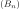
be a countable partition of into events of
positive probability, and an event. Then
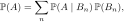
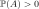
,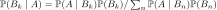
.The events
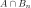
are pairwise disjoint with union, so
countable additivity gives
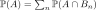
, and each term is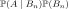
by the definition. For the second identity,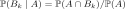
; rewrite the numerator as and the denominator by the first identity.
Events and are independent if
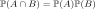
. A family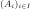
is independent if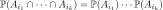
for every finite set of distinct indices.
If and are independent, so are and
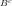
; and if , independence is equivalent to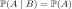
.
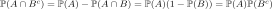
. The second claim is the definition of conditional probability with the factorisation substituted, in either direction.Independence of a family is not pairwise independence: three events can be pairwise independent while the intersection of all three factorises wrongly, which is why the definition quantifies over every finite subfamily. The distinction is what makes the second Borel-Cantelli lemma and the strong law true statements rather than plausible ones.